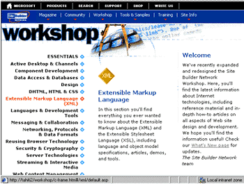
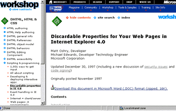
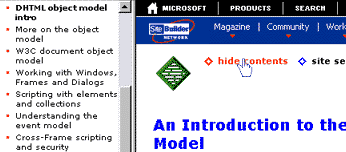
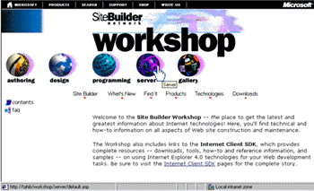
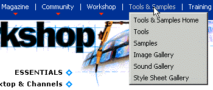

|
| ||
|
| ||
Robert Carter
Microsoft Corporation
June 8, 1998
First in an occasional series on redesign issues, the following article was originally published in Site Builder Network Magazine.
Perhaps you've already noticed a dramatic new design and expansion of the venerable Site Builder Network Workshop, the cornerstone of this site. (In Web time, two years -- an anniversary the SBN Workshop observes next month -- constitutes great maturity.)
What you'll see as you click around is the result of several months' work by two Microsoft Web-publishing teams, SBN's and the Internet Client SDK team. We're quite proud, especially given the constraints we had to work within.
We're so proud we're going to tell you all about how and why we did it in a series of articles. Not just out of pride, though. Many of you face the same issues we did, and might benefit from the baring of our collective souls. Learn from our mistakes. Borrow our code. Adopt our processes. Feel our pain.
This article presents an overview of how to use our new site (tips more than instructions), and the major issues that foisted the redesign upon us.
Those of you familiar with the SBN Workshop will see a huge difference in navigation and general usability. The difference is most pronounced if you use Internet Explorer 4.x or later, although other browsers follow a related scheme, albeit without the two-frame display, dynamically-constructed menus, and mouseover effects. We started with a clean slate, listened to users, evaluated technologies and implementation ideas, and we ended up with a set of templates and code that make it a whole lot easier for users to identify and find information on the subjects that interest them.
We also modified the navbar on the non-Workshop sections of SBN (the home page, SBN Magazine, Member Community, and so on) to reflect our new content organization. Both the original and updated navbar contents are shown below.
Figure 1. SBN navbar, old version
Figure 2. SBN navbar, new version
Unlike lots of the other seemingly simple modifications, this change actually went pretty smoothly. We had to add pop-up code to what were two direct links, tweak the alignment of the pop-ups to match the new categories' positions, and create a few "down-level" (non-Internet Explorer browser) pages. The hardest problem was remembering which font we used to create the new category graphics (MS Sans Serif, if you must know).
Starting from the Workshop home page, you can see the major sections of the site. Instead of five spheres covering Programming, Authoring, Design, Server, and Gallery, we now have 15 topic areas, covering everything from Data Access & Databases to Security & Cryptography, listed down the left side of the screen. Moving your mouse over each bin (we're talking to users of Internet Explorer 4. x for the rest of this article) displays a description of what each bin contains.

Figure 3. Workshop home page with XML bin highlighted
Select a bin by clicking on it with your mouse. A two-frame window now displays the home page for that bin. The left frame displays the articles or sub-sections within. Hollow diamonds indicate a sub-bin; clicking on them will cause a second-level menu to appear underneath. Select an article by clicking on it with your mouse. The article will come up in the right frame and appear bolded in the left.

Figure 4. DHTML, HTML, & CSS Section with sub-bin article displayed
Should you follow a link to another area within the Site Builder Network site, the left frame will not follow along with you. Instead, we intentionally leave it locked on the original article to give you a navigational anchor. Just select it again to return (and avoid having to hit the Back button however many times). If you want to anchor your navigation to a different page, simply select the hide contents and show contents links successively. Of course, this feature will not work if you click through to any site outside SBN because we have to drop the frameset.
Ah, yes. Frames. We know we've often advised you against using frames in some of our articles. We stand by our earlier statements. But with this implementation of the SBN Workshop, we've overcome several of the major design drawbacks of frames. For instance, we don't have to sacrifice valuable screen real estate. Users can turn off the frame display any time by selecting hide contents. And users can bookmark individual pages, eliminating the infuriating frames practice of redirecting users to a generic index page (with a minor caveat; to bookmark a URL and forward it to a friend with a non-Internet Explorer 4.0 browser, we ask that you select hide contents first).

Figure 5. Select the "hide contents" text before bookmarking an article for non-Internet Explorer browsers
It had been 10 dog-years (that's 18 months, for those of you whose lives aren't dominated by our furry friends) since our last redesign, an eternity for Internet endeavors, and the previous design template was starting to show its age. And, to be honest, it wasn't as effective a design as we had hoped. For example, in a few usability studies, we realized many new users had a hard time finding information. Our principal navigational aid, the SBN navbar, was often ignored. Visitors using low-resolution screens (640x480 or less) were left with a small section of screen real estate to view actual content.

Figure 6. The previous Site Builder Network Workshop home page

Figure 7. Closeup of SBN navbar in action
Further, the navbar itself had undergone a lot of change. It started out using VBScript and ActiveX controls. Six months into its life, Internet Explorer 4.0 was released, and accelerated a trend toward using Cascading Style Sheets, Dynamic HTML, and other capabilities such as an XML parser, channels (an XML vocabulary), Active Desktop, and more. By the time we were planning this year's redesign, the navbar used a mix of DHTML and JavaScript to do its stuff. What's more, the content of the Workshop was evolving, so the content bins were becoming less useful to readers. The new design no longer segments content into separate bins for programming and authoring, since the distinction is increasingly arbitrary. We wanted to follow a scheme based more on topics or capabilities.
We'd also agreed to host the Internet Client SDK for Internet Explorer 5. The InetSDK is the set of tools, application programming interfaces (or APIs), and feature documentation for writing applications around Internet Explorer. Although the Microsoft Developer Network has historically been the place to turn for SDKs (and still is for most of them), we became convinced that SBN was a more appropriate home for the InetSDK. Many of our articles referred to the InetSDK, and we wanted to minimize the wear-and-tear on your modem (and your patience). While we're happy to have the InetSDK in our fold, it was a lot of work. The InetSDK for Internet Explorer 4.0 had almost 4,300 files, and the SDK team relies on "builds" to post content, not unlike traditional application-building. The SBN Web team, in contrast, uses a posting model more analogous to the publishing world. Bringing the InetSDK under the SBN umbrella meant the SDK team had to modify its build templates to adhere to the SBN format, even while prepping a new SDK for Internet Explorer 5.
Meanwhile, back at stately Wayne Manor, we at SBN were frantically posting new content on the live site, while creating a duplicate, redesigned site in the background. We had to manage common files, make sure no one overwrote files inappropriately, agree on code functionality and implementation, and in general learn to work together, join hands, and sing in harmony. Yikes!
Finally, we had access to a tool that would generate a SBN-sitewide index. In addition to the intuitive redesign, we now think we've eliminated any excuses for not finding a file or subject that interests you. But the index didn't happen by magic. It meant somebody (the editors, as it turns out) had to go back into each and every file on the site and place index entries at the appropriate points.
Of course, nothing causes you to revisit the desirability of all the baggage you've accumulated more than the prospect of having to pack it up, organize and index it, and lug it to your new digs. The same goes for migrating all the SBN pages to the new design template. The big move was sufficient justification to really clean up the site. Because we'd have to go muck around in any file that made the cut anyway (we would be converting them to the new design template and indexing them), we also took time to address all the niggling questions that plague any large site striving for a consistent voice. Decisions as seemingly mundane as "Do we say 'Back to Contents' or 'Back to Top'?" Or as fear-inducing as a mandate for closing </P> tags everywhere. (We punted.) All got their moment in the sun, as were hand-wringing discussions about whether to continue posting older articles that touted the benefits of technologies no longer in vogue. (As a humbling reminder of the vicissitudes of publishing on the Web, I made the painful decision to axe an article about the last redesign of the SBN site. Et tu, Brute?)
All told, the redesign was a healthy and worthwhile exercise, albeit one that challenged us in lots of ways. In effect, we were operating two complete sites. We had to continue posting content to the active site. But on another server, we were feverishly duplicating the content in the new design, cleaning it up, breaking it, fixing it again, testing it, and integrating the InetSDK team's work. Not for the organizationally challenged.
But we believe the new design is very clean, maximizes the space available for viewing content, and implements an elegant, intuitive navigation scheme. Enjoy our -- and your -- new home.
Robert Carter is a technology writer on the Site Builder Network Web team, a connoisseur of canines, and the proudest new papa in the Pacific Northwest.
Did you find this material useful? Gripes? Compliments? Suggestions for other articles? Write us!
© 1999 Microsoft Corporation. All rights reserved. Terms of use.